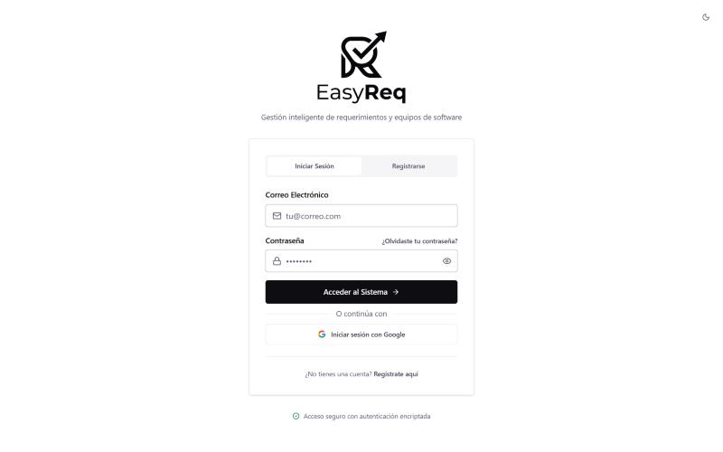

Web app, team of 6, 2026
EasyReq
A web app that uses AI to help teams write software requirements, built with Next.js and Firebase.

What I did
- Led the UI redesign and built the shared modal, confirmation and error components the team uses.
- Merged editing a team's details and its members into one screen instead of two flows.
- Removed a pencil icon that did the same thing as the arrow on every row.
- Added a help page and a guided password recovery flow.